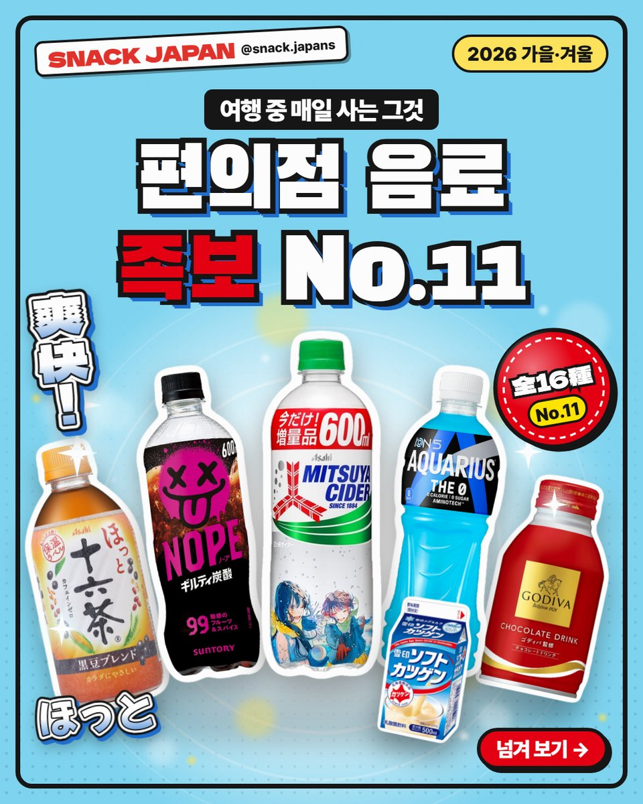
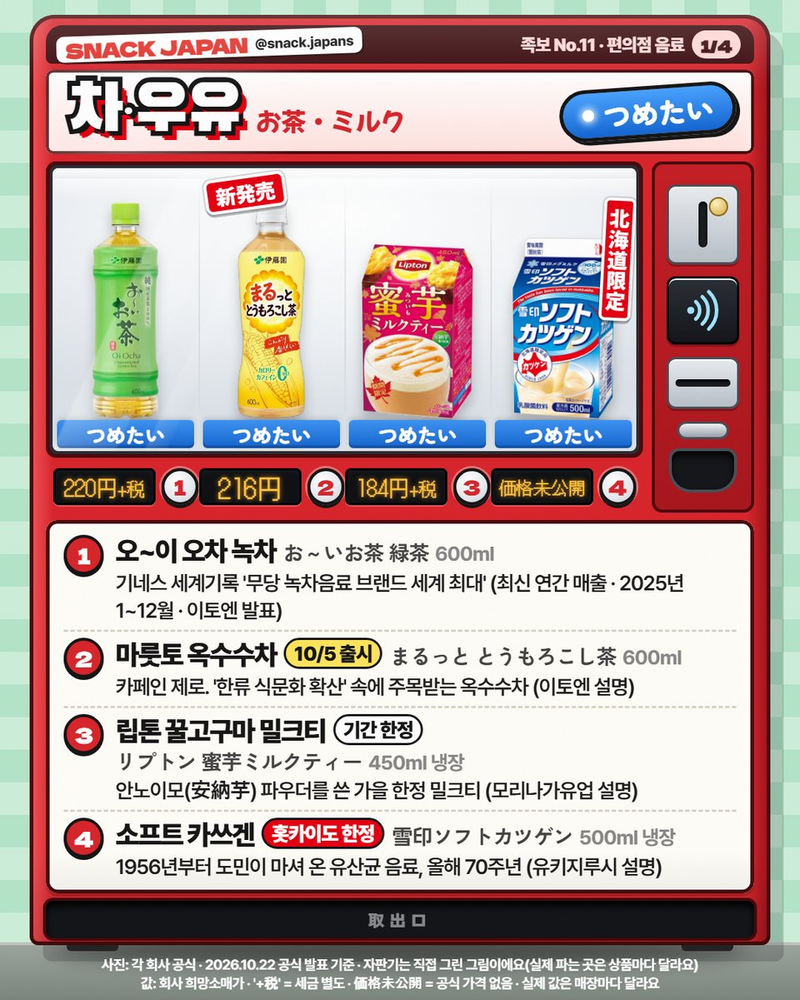
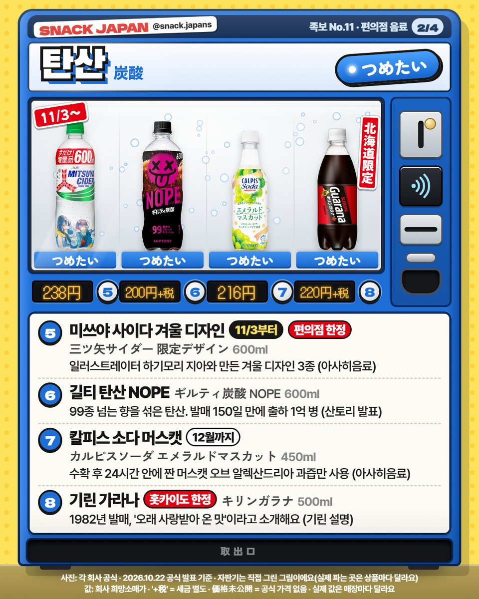
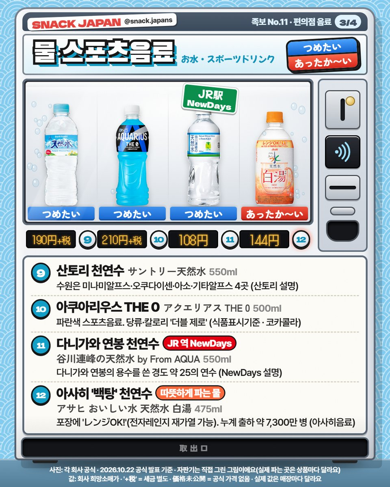
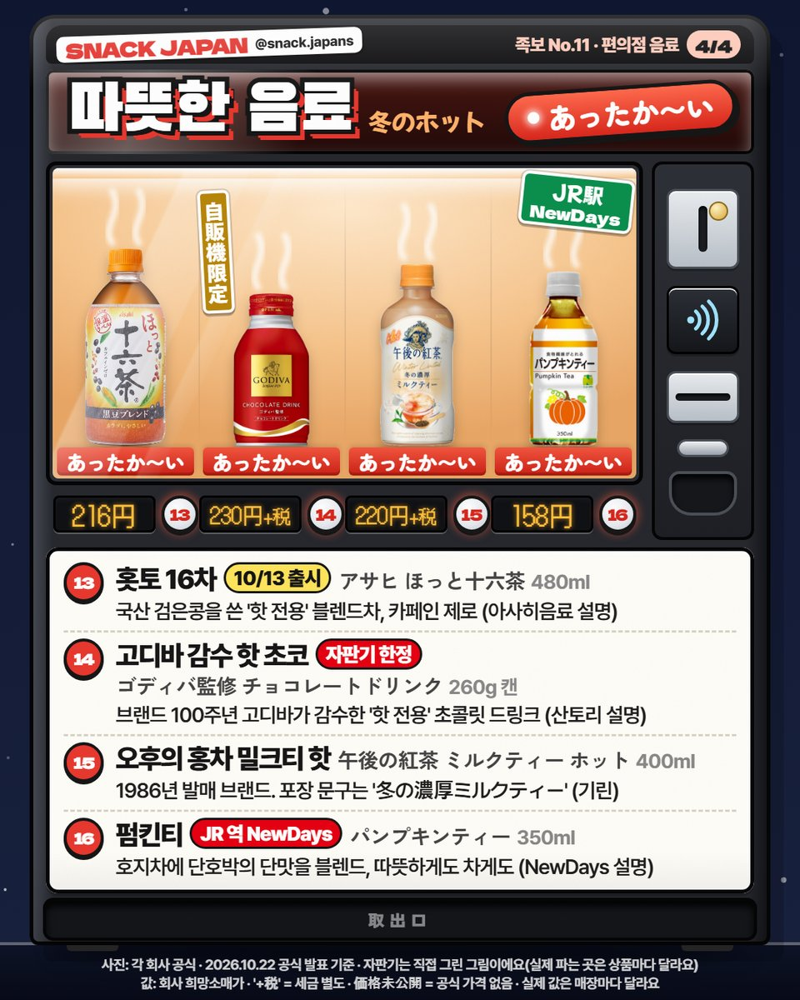
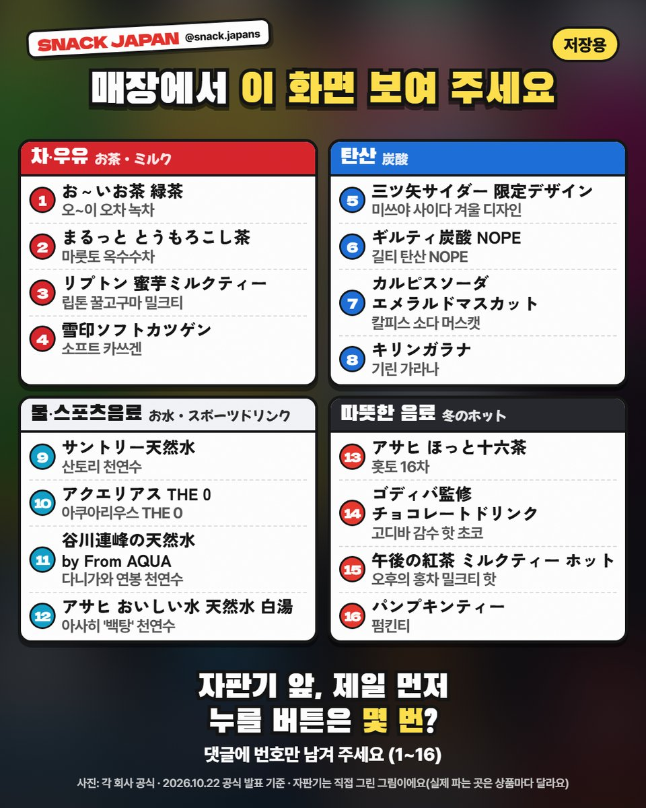

일본 편의점 음료 16가지 총정리, 홋카이도 한정 가라나·자판기 한정 고디바까지
차·우유·탄산·물·따뜻한 음료까지! 회사 공식 자료로 확인한 일본 편의점 음료 16가지를 자판기 4대로 정리했어요.
일본 여행 가면
하루에 한 번은 꼭 사게 되는 거,
바로 음료죠 🥤
편의점 냉장고 앞에서 뭘 고를지 한참 서 있던 분들 위해
회사 공식 자료로 확인한 16가지를
자판기 4대에 나눠 담아 봤어요!


1. 차·우유
- 1번 오~이 오차 녹차 (이토엔): 기네스 세계기록 '무당 녹차음료 브랜드 세계 최대'예요. 기준은 최신 연간 매출, 2025년 1~12월 (이토엔 발표)
- 2번 마룻토 옥수수차 (이토엔): 10월 5일 출시, 카페인 제로. 이토엔이 '한류 식문화 확산' 속에 옥수수차가 주목받는다고 발표했어요
- 3번 립톤 꿀고구마 밀크티 (모리나가유업): 안노이모(安納芋) 파우더를 쓴 가을 한정 밀크티래요. 냉장 칸 종이팩이에요
- 4번 소프트 카쓰겐 (유키지루시 메그밀크): 홋카이도 한정! 1956년부터 도민이 마셔 온 유산균 음료고, 2026년이 발매 70주년이래요

2. 탄산
- 5번 미쓰야 사이다 겨울 디자인 (아사히음료): 일러스트레이터 하기모리 지아와 만든 겨울 디자인 3종이에요. 11월 3일부터 일본 전국 편의점 한정 (재고가 떨어지면 보통 500ml로 바뀐대요)
- 6번 길티 탄산 NOPE (산토리): 99종 넘는 향을 섞은 탄산. 발매 150일 만에 출하 1억 병을 넘었대요 (산토리 발표)
- 7번 칼피스 소다 에메랄드 머스캣 (아사히음료): 수확 후 24시간 안에 짠 머스캣 오브 알렉산드리아 과즙만 썼대요. 12월까지 판매 예정
- 8번 기린 가라나 (기린): 홋카이도 한정 탄산! 1982년 발매예요

3. 물·스포츠음료
- 9번 산토리 천연수 (산토리): 수원이 미나미알프스·오쿠다이센·아소·기타알프스 4곳이래요
- 10번 아쿠아리우스 THE 0 (일본 코카콜라): 파란색 스포츠음료, 당류·칼로리 '더블 제로'(식품표시기준)
- 11번 다니가와 연봉 천연수 (NewDays): JR 동일본 역 편의점 NewDays에서 파는 물. 경도 약 25의 연수래요
- 12번 아사히 '백탕' (아사히음료): 따뜻하게 파는 물이에요. 포장에 'レンジOK!'(전자레인지 재가열 가능) 표시가 있고, 누계 출하가 약 7,300만 병이래요 (2026년 7월 말, 아사히음료 발표)

4. 따뜻한 음료 (ホット)
카드에서는 따뜻한 음료 칸을 빨간 'あったか〜い'로 표시했어요.
- 13번 홋토 16차 (아사히음료): 국산 검은콩을 쓴 '핫 전용' 블렌드차, 카페인 제로. 10월 13일 출시
- 14번 고디바 감수 핫 초코 (산토리): 자판기 한정! 브랜드 100주년 고디바가 감수한 '핫 전용' 초콜릿 드링크래요
- 15번 오후의 홍차 밀크티 핫 (기린): 1986년 발매 브랜드. 포장에는 '冬の濃厚ミルクティー'라고 적혀 있어요
- 16번 펌킨티 (NewDays): 호지차에 단호박의 단맛을 블렌드, 따뜻하게도 차게도 마실 수 있대요 (NewDays 설명)

5. 매장에서는 이 이름으로!
마지막 카드에 16개 일본어 이름을 번호대로 모아 뒀어요.
점원에게 화면을 보여 주거나, 진열대 이름과 맞춰 보면 돼요.
- 홋카이도 한정: 雪印ソフトカツゲン, キリンガラナ
- 자판기 한정: ゴディバ監修 チョコレートドリンク(ホット専用)
- JR 역 NewDays: 谷川連峰の天然水 by From AQUA, パンプキンティー
총평
- 기준: 2026년 10월 22일 각 회사 공식 발표
- 가격: 사진 카드에 정리해 뒀어요 (실제 값은 매장마다 달라요)
- 참고: 자판기는 직접 그린 그림이에요. 실제 파는 곳은 상품마다 달라요
- 추천: 일본 편의점 음료 고르기 어려운 분, 겨울에 일본 가는 분, 홋카이도·JR 동일본 여행 가는 분
자판기 앞에 섰다면
제일 먼저 누를 버튼은 몇 번이에요? 🥤